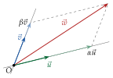
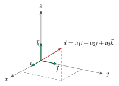
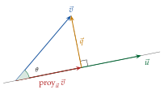

Dos vectores son colineales (o paralelos) si tienen representantes en una misma recta; equivalentemente, si uno es múltiplo escalar del otro. El vector nulo es colineal con todos.
Un vector w es combinación lineal de u1,…,uk si existen escalares λ1,…,λk con w=λ1u1+⋯+λkuk. Los vectores u1,…,uk son linealmente independientes si la única combinación lineal de ellos que da 0 es la trivial: λ1u1+⋯+λkuk=0 ⟹ λ1=⋯=λk=0. Si no, son linealmente dependientes.
Dos vectores u, v son linealmente dependientes si y solo si son colineales. En el plano, esto ocurre si y solo si u1v2−u2v1=0.
Si λu+μv=0 con, digamos, μ=0, entonces v=−μλu es múltiplo de u. Recíprocamente, si v=λu, entonces λu−v=0 es una combinación no trivial. La condición en componentes es el Teorema 9.3.6.
Si u y v son vectores del plano linealmente independientes, todo vector w del plano se escribe de manera única como w=αu+βv. Se dice que {u,v} es una base del plano y que (α,β) son las coordenadas de w en esa base.
Existencia (geométrica). Sean u=OU, v=OV y w=OW. Por W trazamos la paralela a OV, que corta a OU (no son paralelas porque u, v no son colineales) en un punto P. Entonces OPWQ es un paralelogramo, donde Q está en OV, y w=OP+OQ con OP=αu y OQ=βv.
Unicidad. Si αu+βv=α′u+β′v, entonces (α−α′)u+(β−β′)v=0, y por la independencia α=α′, β=β′.
La cuadrícula inclinada la forman u y v. Mueva w para leer sus coordenadas en esa base.

Los vectores =(1,0) y =(0,1) forman la base canónica del plano, y (u1,u2)=u1+u2: las componentes de un vector son sus coordenadas en la base canónica.
Escribamos w=(7,4) en la base u=(2,1), v=(1,3) (que es base porque 2⋅3−1⋅1=5=0). Buscamos α(2,1)+β(1,3)=(7,4): 2α+β=7, α+3β=4. Resolviendo, α=517, β=51.
Tres vectores son coplanares si tienen representantes en un mismo plano.
Tres vectores del espacio son linealmente dependientes si y solo si son coplanares.
Si λu+μv+νw=0 con ν=0, entonces w=−νλu−νμv; tomando representantes con origen en O, W está en el plano que contiene a O, U y V (por la regla del paralelogramo). Recíprocamente, si son coplanares y u, v no son colineales, por el Teorema 11.3.4 (dentro de ese plano) w=αu+βv, que es una dependencia; si u y v son colineales, ya son dependientes.
Si u, v, w son linealmente independientes (no coplanares), todo vector x del espacio se escribe de manera única como x=αu+βv+γw.
Sea x=OX y π el plano por O que contiene a u y v. La paralela a w por X corta a π en un punto P (no es paralela a π porque w no es coplanar con u, v). Entonces x=OP+PX, con PX=γw y OP=αu+βv por el teorema del plano. La unicidad se prueba como antes.
Los vectores =(1,0,0), =(0,1,0) y k=(0,0,1) forman la base canónica, y (u1,u2,u3)=u1+u2+u3k.

Tres puntos A, B, C son colineales si y solo si AB y AC son linealmente dependientes. Cuatro puntos A, B, C, D son coplanares si y solo si AB, AC, AD son linealmente dependientes.
¿Son coplanares A=(1,0,0), B=(0,1,0), C=(0,0,1) y D=(1,1,−1)? Tenemos AB=(−1,1,0), AC=(−1,0,1) y AD=(0,1,−1). Buscamos αAB+βAC=AD: −α−β=0, α=1, β=−1. Se cumple, así que AD=AB−AC y los cuatro puntos son coplanares. (En el capítulo siguiente veremos un criterio con el producto mixto.)
La suma y el producto por escalar no hablan de longitudes ni de ángulos. En este capítulo introducimos dos productos que sí lo hacen: el producto interno, que codifica longitudes, ángulos y proyecciones, y el producto vectorial, que codifica áreas, orientación y, combinado con el anterior, volúmenes. Terminamos con su uso en la física: trabajo, momento de una fuerza y equilibrio.
El ángulo entre dos vectores no nulos u y v es el ángulo θ∈[0∘,180∘] formado por sus representantes con origen común: θ=m∠UOV si u=OU, v=OV y no son colineales; θ=0∘ si son colineales del mismo sentido, y θ=180∘ si son de sentido contrario.
El producto interno (o producto escalar, o producto punto) de u y v es el número u⋅v=∥u∥∥v∥cosθ, donde θ es el ángulo entre ellos; si alguno es nulo, u⋅v=0.
Si u=(u1,u2,u3) y v=(v1,v2,v3), entonces u⋅v=u1v1+u2v2+u3v3. (En el plano, u⋅v=u1v1+u2v2.)
Es el Teorema 9.4.10 en el espacio: en el triángulo △OUV, la ley del coseno da ∥v−u∥2=∥u∥2+∥v∥2−2∥u∥∥v∥cosθ, y desarrollando en componentes, ∥v−u∥2=∥u∥2+∥v∥2−2(u1v1+u2v2+u3v3). Comparando se obtiene el resultado. (Si los vectores son colineales, la cuenta es directa.)
Para vectores u,v,w y λ∈R:
u⋅v=v⋅u;
u⋅(v+w)=u⋅v+u⋅w;
(λu)⋅v=λ(u⋅v);
u⋅u=∥u∥2≥0, y u⋅u=0 solo si u=0;
(Cauchy–Schwarz) ∣u⋅v∣≤∥u∥∥v∥;
u⊥v (son ortogonales) si y solo si u⋅v=0.
(i)–(iv) se siguen de la fórmula en coordenadas. (v) es ∣cosθ∣≤1. (vi) es cosθ=0, o el Teorema 9.4.9.
Halle el ángulo entre u=(1,2,2) y v=(3,0,−4). Tenemos u⋅v=3+0−8=−5, ∥u∥=3 y ∥v∥=5. Luego cosθ=−155=−31 y θ≈109,5∘.
Las diagonales de un rombo son perpendiculares. Si el rombo tiene lados u y v con ∥u∥=∥v∥, sus diagonales son u+v y u−v, y (u+v)⋅(u−v)=u⋅u−v⋅v=∥u∥2−∥v∥2=0. Del mismo modo, ∥u+v∥2+∥u−v∥2=2∥u∥2+2∥v∥2 es la ley del paralelogramo (Teorema 6.6.4).
Sea u=0. Todo vector v se escribe de manera única como v=p+q, con p colineal con u y q⊥u. El vector p es la proyección ortogonal de v sobre u: proyuv=u⋅uv⋅uu, y el número ∥u∥v⋅u=∥v∥cosθ es la componente escalar de v en la dirección de u.
Buscamos p=λu con (v−λu)⋅u=0, es decir, v⋅u−λu⋅u=0. Esto determina un único λ=u⋅uv⋅u. Geométricamente, si v=OV, el extremo de p es el pie de la perpendicular desde V a la recta de u.
Arrastre u y v. El signo de u · v decide si el ángulo es agudo, recto u obtuso, y la proyección cambia de sentido.

Un conjunto de vectores es ortogonal si sus vectores son ortogonales dos a dos, y ortonormal si además son unitarios. Una base ortonormal del espacio es una base {e1,e2,e3} con ei⋅ej=0 si i=j y ei⋅ei=1.
La base canónica es ortonormal. Las bases ortonormales son especialmente cómodas: si {e1,e2,e3} es ortonormal, las coordenadas de v son simplemente los productos internos, v=(v⋅e1)e1+(v⋅e2)e2+(v⋅e3)e3 (basta multiplicar v=αe1+βe2+γe3 por cada ei). Además, vectores no nulos ortogonales dos a dos son linealmente independientes: si ∑λiei=0, al multiplicar por ej queda λj∥ej∥2=0.
Los ángulos directores de un vector no nulo u son los ángulos α, β, γ que forma con , , k. Sus cosenos son los cosenos directores: cosα=∥u∥u1,cosβ=∥u∥u2,cosγ=∥u∥u3, y cumplen cos2α+cos2β+cos2γ=1. El vector (cosα,cosβ,cosγ) es el unitario en la dirección y sentido de u.
Próxima semana: Producto vectorial, producto mixto y aplicaciones
© 2026 Santiago Alzate Suárez. Material de autoría propia; todos los derechos reservados. Se prohíbe su reproducción o distribución sin autorización, y todo uso debe citar al autor.